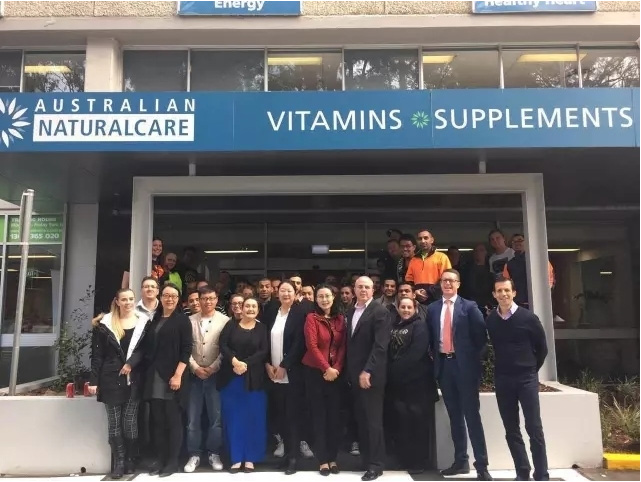
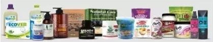

2016年6月底，新希望集团旗下草根知本全资收购拥有27年品牌历史的澳大利亚保健品品牌Australia NaturalCare，海外战略迈出新的一步，正式进入营养健康领域。

近年来，在我国人口老龄化、城市压力、收入增加、食品安全观念增强等因素驱动下，我国的保健品市场消费升级明显。为了迎合国内保健品市场的特点和国民对保健品消费升级的要求，草根知本集团全资收购拥有27年品牌历史的澳大利亚保健品品牌Australian NaturalCare，也是完成草根知本集团在高端健康食品、健康医疗领域海外战略布局的重要一环。
Australian NaturalCare Pty Ltd. (以下简称“ANC”)成立于1989 年，品牌经营年限超过27年。主要经营维生素，膳食补充剂，天然生活用品等产品。Australian NaturalCare目前自主品牌119个产品，以其天然、无污染、无化学残留的品质，均获得澳洲政府TGA审批。
草根知本集团对ANC进行并购后，将继续保留ANC的本土化经营理念，保留ANC高层及品牌经营模式，并且会更加坚持产品的原产地生产，同时进行更加适合中国人体质的新产品研发和在中国的渠道化建设。
草根知本集团正式成立于2015年4月23日，是新希望集团董事长刘永好先生与王航先生、席刚先生等合伙人共同发起的创新创业平台。草根知本获得先期投资人民币10亿元，预计获得投资将超百亿。
草根知本的使命是从文化、快消、电商、医疗健康等领域出发，整合新希望的海外战略资源，秉持“优选全球”的理念，实现“健康中国，便利生活”的目标，从乳业出发，逐渐覆盖高端健康食品、O2O、移动互联、冷链物流、健康医疗、跨境电商等。